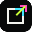

P and signal
A direct extension of the thin Progress Apps wordmark. The lime dot acts as a small live status signal.
Each direction stays legible at browser tab size and uses the fluorescent Progress Apps palette.
A direct extension of the thin Progress Apps wordmark. The lime dot acts as a small live status signal.

An app square opening outward. It communicates paid software being unlocked and made accessible.
A compact progress ring with three brand colours. Abstract, flexible and closely tied to the name.